OFFICIAL OTCA · REVISI 02 · MENUNGGU PERSETUJUAN
Lebih banyak objek.
Pesan tetap dari suara asli.
9 adegan · sekitar 51,55 detik · hitam, emas, putih · Montserrat.
Ini gambar yang dirender dari komposisi Remotion, bukan video final. Gambar menilai tata letak dan tahapan aksi; keluwesan, tempo, audio, dan transisi belum dinyatakan lulus. Tidak ada render video final pada revisi ini.
Aset kampus, buku/topi wisuda, dan berkas merupakan ilustrasi buatan, bukan kampus atau dokumen resmi DAAD. Tata letak talent di samping objek pada beberapa adegan merupakan alternatif yang diajukan di revisi ini; mohon tinjau bersama pilihan grafis atas + talent bawah.
Subtitle editorial: maksimal dua baris, hierarki 52/64 px pada kanvas 1080 px, aksen kata penting dan garis kata aktif. Gaya yang sama diterapkan pada layar penuh maupun talent.
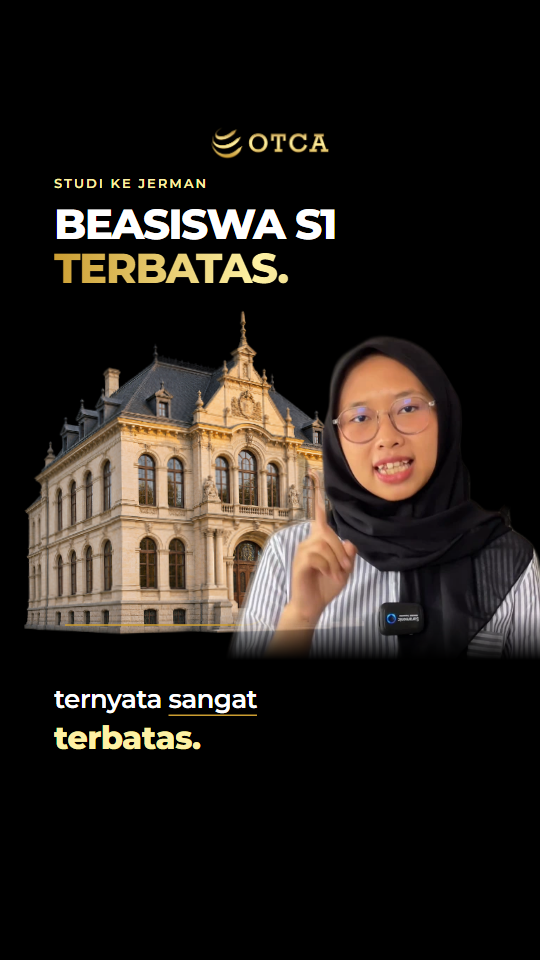
ADEGAN 01 · 0.00–4.10 detik · TALENT + ASET
BEASISWA S1 TERBATAS.
Kampus sebagai konteks, wajah sebagai pembuka.
Rencana gerak
Kampus masuk dengan putaran kecil; garis penekanan muncul pada kata “terbatas”.
Sambungan adegan
Masuk ke berkas program saat DAAD disebut.
Ucapan sumber
Halo parents, peluang beasiswa S1 di Jerman ternyata sangat terbatas.
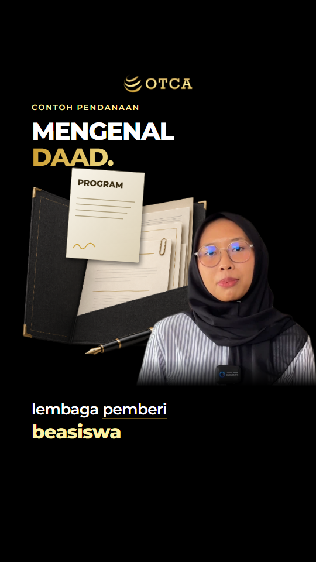
ADEGAN 02 · 4.10–8.10 detik · TALENT + ASET
MENGENAL DAAD.
Berkas program menjadi objek utama di samping talent.
Rencana gerak
Lembar PROGRAM ditarik naik dari dossier, mengikuti pembahasan lembaga pendanaan.
Sambungan adegan
Beralih dari contoh lembaga ke jenjang penerima.
Ucapan sumber
Contohnya DAAD, lembaga pemberi beasiswa terbesar di Jerman.
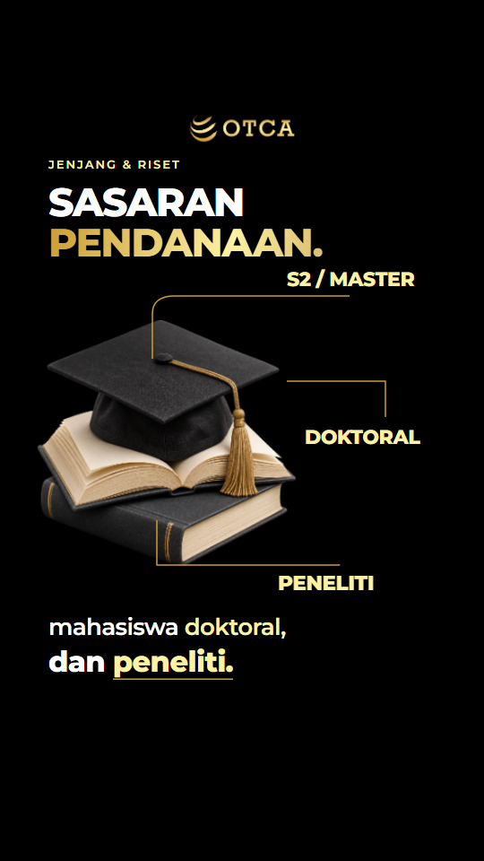
ADEGAN 03 · 8.10–16.50 detik · LAYAR PENUH
SASARAN PENDANAAN.
Layar penuh: buku dan topi wisuda, tiga jenjang terbaca terpisah.
Rencana gerak
Jalur S2, doktoral, lalu peneliti terbentuk bertahap mengikuti ucapan. Jangan muncul sekaligus.
Sambungan adegan
Objek studi diteruskan sebagai pendukung pada adegan kursus.
Ucapan sumber
Sebagian besar program pendanaannya memang ditujukan untuk lulusan S1 yang ingin melanjutkan S2, mahasiswa doktoral, dan peneliti.
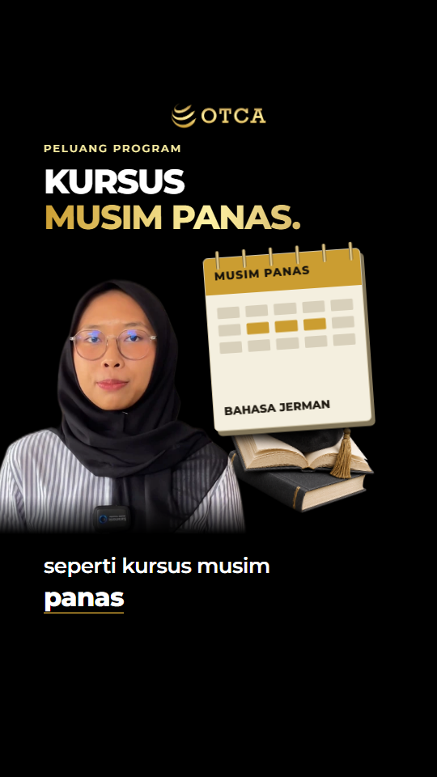
ADEGAN 04 · 16.50–22.90 detik · TALENT + ASET
KURSUS MUSIM PANAS.
Kalender menjelaskan program yang berlangsung pada periode tertentu.
Rencana gerak
Kalender menghadap penonton; tiga sel periode menguat saat “kursus musim panas”.
Sambungan adegan
Pisahkan cakupan kursus dari pembiayaan kuliah.
Ucapan sumber
Mahasiswa S1 juga punya peluang melalui program tertentu seperti kursus musim panas bahasa Jerman.
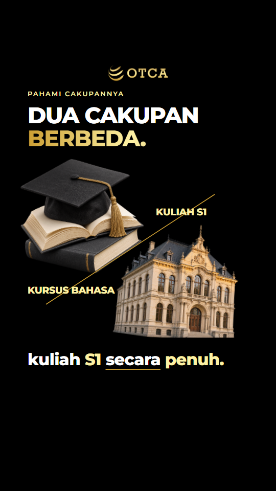
ADEGAN 05 · 22.90–27.93 detik · LAYAR PENUH
DUA CAKUPAN BERBEDA.
Layar penuh: objek studi dan kampus dipisahkan secara visual.
Rencana gerak
Kedua objek bergeser menjauh, garis pembatas tumbuh saat narasi menyatakan perbedaan.
Sambungan adegan
Kampus kembali menjadi latar konteks mahasiswa di Jerman.
Ucapan sumber
Tetapi program ini berbeda dari beasiswa yang membiayai kuliah S1 secara penuh.
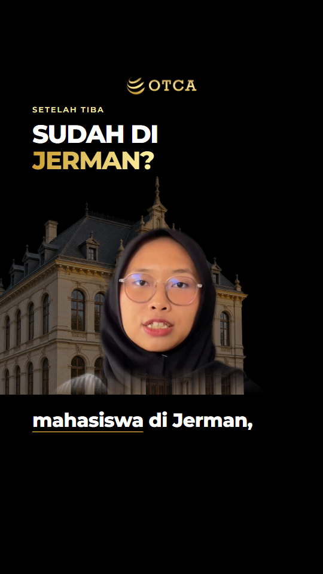
ADEGAN 06 · 27.93–30.95 detik · TALENT + ASET
SUDAH DI JERMAN?
Talent kembali dominan untuk menjaga ritme penjelasan.
Rencana gerak
Dorongan kamera sangat pelan; kampus redup sebagai konteks, bukan objek yang terus berputar.
Sambungan adegan
Berkas aplikasi mengambil alih saat persyaratan dibahas.
Ucapan sumber
Bahkan ketika sudah menjadi mahasiswa di Jerman,
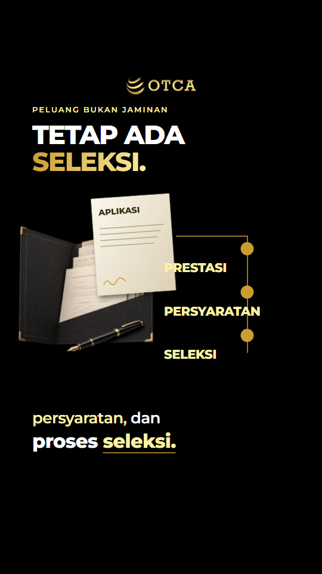
ADEGAN 07 · 30.95–39.70 detik · LAYAR PENUH
TETAP ADA SELEKSI.
Layar penuh: berkas aplikasi dan tiga kriteria.
Rencana gerak
Lembar aplikasi terangkat; penanda prestasi, persyaratan, dan seleksi aktif berurutan.
Sambungan adegan
Kembali ke talent setelah penjelasan bahwa beasiswa tidak otomatis.
Ucapan sumber
peluang mendapatkan beasiswa tetap tergantung pada prestasi, persyaratan, dan proses seleksi. Tidak semua mahasiswa bisa mendapatkannya.
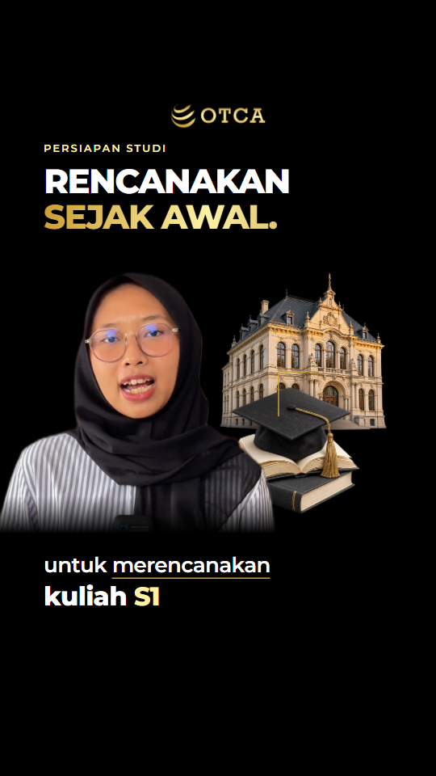
ADEGAN 08 · 39.70–45.70 detik · TALENT + ASET
RENCANAKAN SEJAK AWAL.
Talent menyampaikan inti saran, kampus dan buku sebagai pendukung.
Rencana gerak
Buku bergeser menuju posisi rencana studi; perhatian tetap pada wajah dan kalimat sumber.
Sambungan adegan
Pindahkan fokus ke ajakan asli.
Ucapan sumber
Jadi, jangan hanya mengandalkan beasiswa untuk merencanakan kuliah S1 anak di Jerman.
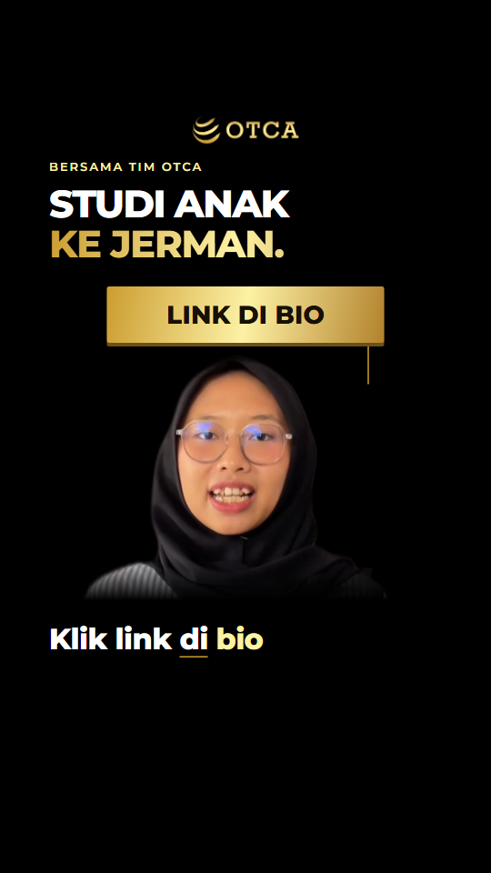
ADEGAN 09 · 45.70–51.55 detik · TALENT + ASET
STUDI ANAK KE JERMAN.
Penutup asli, dengan penanda LINK DI BIO yang jelas.
Rencana gerak
Bidang CTA masuk satu kali mengikuti ucapan; hindari kedipan dan pantulan berulang.
Sambungan adegan
Tahan penutup hingga ucapan tim OTCA selesai.
Ucapan sumber
Klik link di bio untuk mulai persiapkan studi anak ke Jerman bersama tim OTCA.
Tahapan gerak yang diajukan
Baca dari kiri ke kanan. Ini sampel posisi objek pada beberapa waktu, bukan bukti animasi sudah halus.
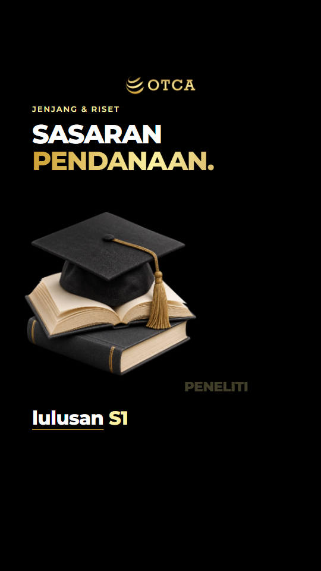
11,6 dtk · sebelum jenjang disebut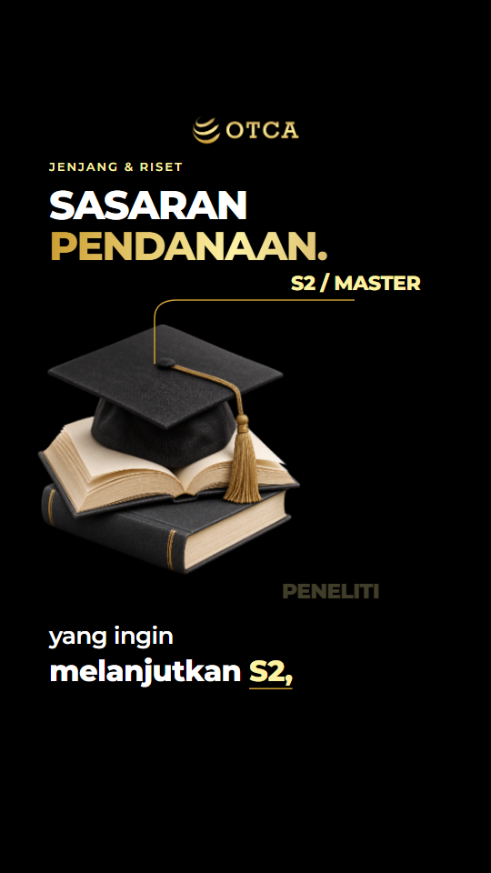
13,7 dtk · S215,9 dtk · tiga jenjang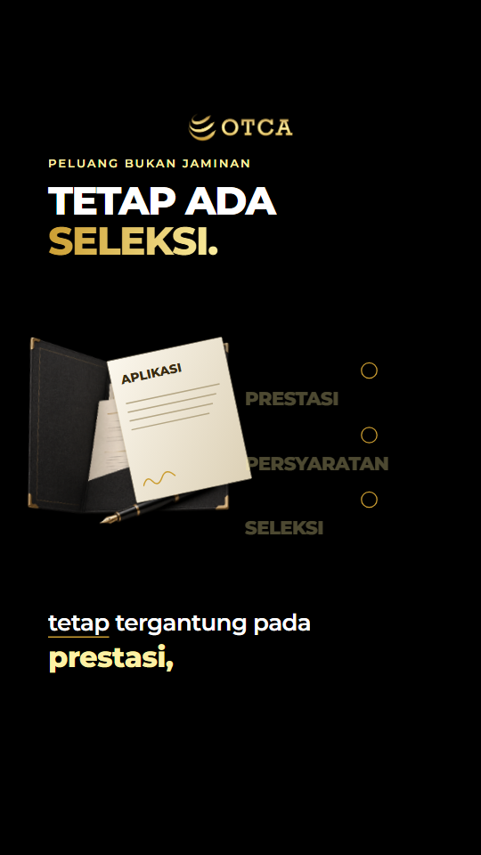
33,0 dtk · berkas awal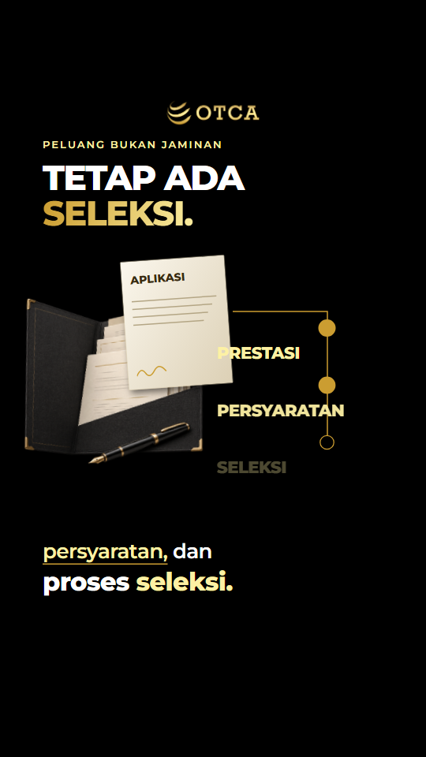
34,9 dtk · kriteria berkembang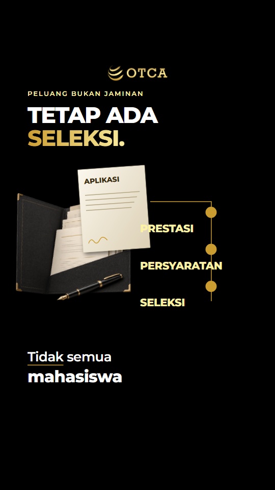
37,4 dtk · seleksiThumbnail OTCA
Cover dari proyek Nina yang sama, mengikuti template terkunci v1.2. Termasuk dalam tinjauan ini; tidak diubah mengikuti gaya adegan video.
Yang perlu diputuskan
Tinjau komposisi, kepadatan aset, gaya subtitle, dan layout talent. Sebut nomor adegan jika ingin revisi. Persetujuan desain belum diberikan; render final tetap ditahan.